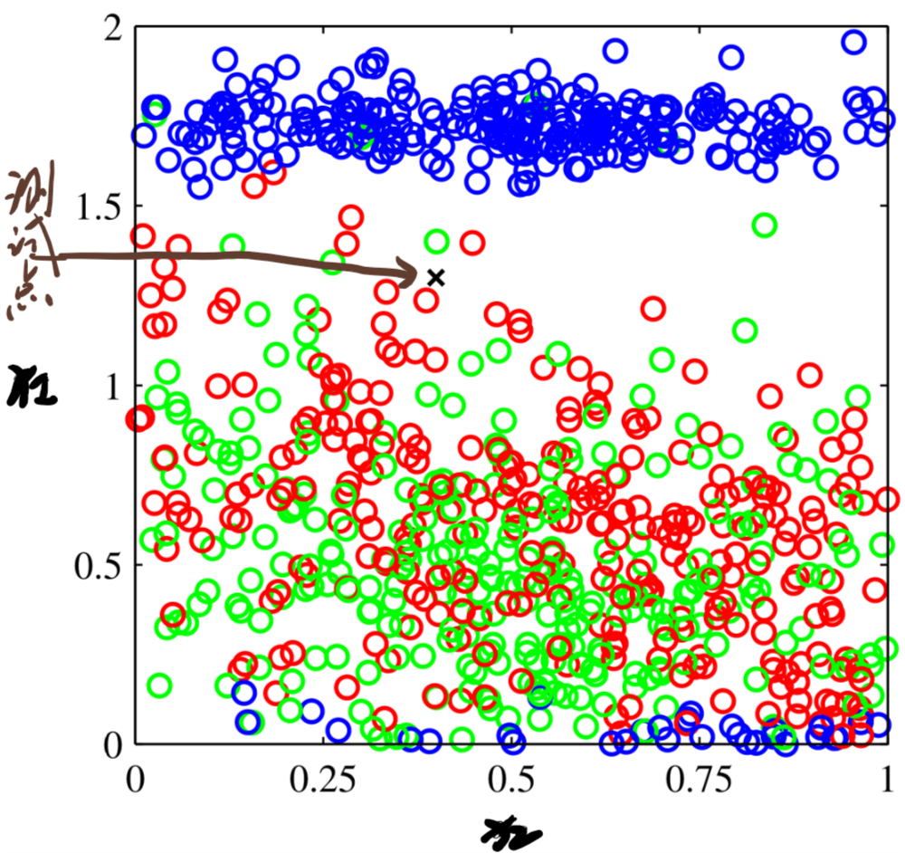
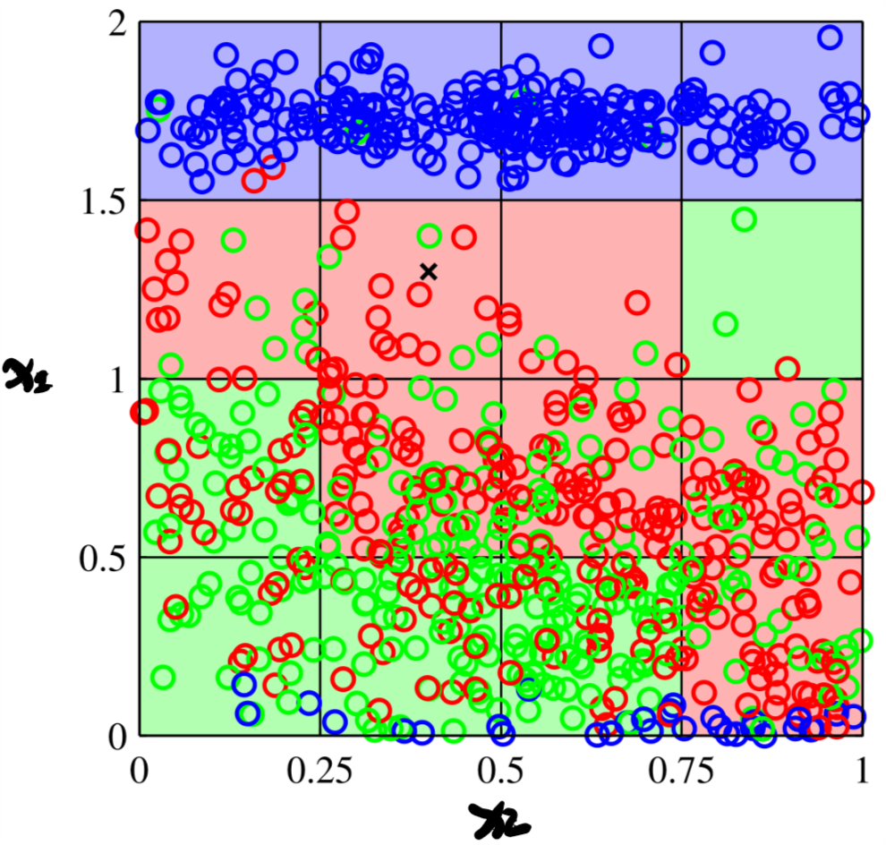
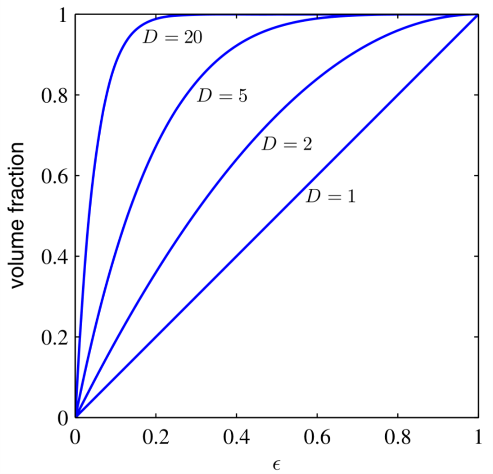

维度诅咒
1 回忆
在 多项式拟合 问题中，输入的测试集\(x\)是一维的，估计的目标值\(t\)也是一维的。这个模型是模式识别中的 "toy" 模型，主要用来引入模式识别中的相关概念。在实际应用中，输入测试集往往是高维的，随着维度的提升，原先不是问题的地方也会有问题浮现。
2 最近邻算法
现在我们考虑一个分类问题，目标可以分三类。即，对于一个输入，输出是三个中的一个。为了简化问题，我们考虑输入是个二维向量\((x_{1},x_{2})\)。这么做仅仅是为了简化问题，并不代表所有输入都是这么低的维度。假设我们已经有了100个训练集，其分布如图1所示。蓝色绿色和红色分别代表不同的分类。

图 1: 二维输入的分类问题模型
对于输入（图1 中用黑色叉表示），我们要估计其属于黑色，蓝色或者绿色中的哪一类。一个最直观的输出是看看它周围的都是什么类型。如何把这个思想转化位算法？一个最简单的实现就是把输入空间划分成大小相等的胞元，如图2所示。
通过对输入空间进行胞元划分，我们只需要统计新的输入落入的胞元中哪种类型占比最大就可以。这种方法叫做最近邻算法。这种简单粗暴的最近邻算法有很多的问题，但是最致命的一个就是当输入矢量维度变大时带来的复杂度问题，即维度诅咒。设想：我们现在的输入是二维向量，但是当输入是三维，四位甚至更高维呢？问题就变得复杂起来。因为输入的维度变高后，胞元的数量也成指数上升。

图 2: 最近邻算法的简单实现
现在让我们再回到多项式拟合问题上来。假设输入是\(D\)维的而不是\(1\)维的。那么一个三阶的多项式拟合问题就变成：
\begin{equation} \label{eq:1} y(\mathbf{x}, \mathbf{w}) = w_{0} + \sum_{i=1}^{D}w_{i}x_{i} + \sum_{i=1}^{D}\sum_{j=1}^{D} w_{ij}x_{i}x_{j} + \sum_{i=1}^{D}\sum_{j=1}^{D}\sum_{k=1}^{D}w_{ijk}x_{i}x_{j}x_{k} \end{equation}式 (\ref{eq:1})的最高阶数是三阶，其需要估计的系数\(\mathbf{w}\)就到了\(D^{3}\)个。通常，为了更高的精度，我们需要更高阶的多项式，对于最高阶为\(M\)的多项式，其需要估计的系数是\(D^{M}\)个，呈指数增长。
3 厚厚的西瓜皮
我们生活在一个三维世界中，所以让我们去想象四维空间的事情显得异常困难，但是数学上表示还是可以的。考虑一个\(D\)维空间的球，半径为\(1\)，这个\(D\)维的球里嵌套了另一个\(D\)维的球，半径为\(1-\epsilon\)。问这两个球之间的体积占大球体积多大比例？
我们知道一个\(D\)维空间球半径为\(r\)的球的体积可以表示为：
\begin{equation} \label{eq:2} V_{D}(r) = K_{D}r^{D} \end{equation}其中\(K_{D}\)是依赖于\(D\)的常数。那么前面问题的结论是：
\begin{equation} \label{eq:3} \frac{V_{D}(1) - V_{D}(1-\epsilon)}{V_{D}(1)} = 1- (1-\epsilon)^{D} \end{equation}为了对这个问题有更直观的感觉，我们画出了不同\(D\)关于\(\epsilon\)的函数。如图3所示。

图 3: 两球之间的体积
从图3 我们可以看出对于固定的\(\epsilon\)，随着维度的提升，两球之间的体积占大球的体积的比例越来越大。比如对于\(\epsilon = 0.1\)，也就是说半径是\(0.9\)的\(D\)维空间中的球，当\(D\)是20 的时候两球之间的体积占了大球体积的85% .也就是说如果在\(20\)维空间的这个球是西瓜的话，这个西瓜的西瓜皮就占了这个西瓜相当大的体积。
4 高维空间的高斯分布
现在我们考虑高维空间的高斯分布。在高维空间上，如果从笛卡尔空间转换到极坐标空间并且积分掉方向变量（也就是那个角度变量），我们就得到了一个与从零点出发的半径\(r\)有关的密度函数\(p(r)\)。那么\(p(r)\delta r\)就是在半径\(p(r)\)处薄薄的一层\(\delta r\)代表的概率。从图3 我们可以看到即使这薄薄的一层也占据了很大的概率空间。
5 怎么办？
既然现实中很多问题都是高维，而在处理高维问题的时候，我们又碰到了维度诅咒。是不是就无计可施了呢？no！没有办法也要想办法，不然咋办呢？
事实上，尽管存在维度诅咒，在处理高维问题时，我们依然可以找到有效的解决方案。这基于两个事实：
- 真实的数据通常只存在于输入空间的一个很小的子集。
- 真实的数据通常展现一定的平滑特性，即对于输入的微小波动，输出也是仅仅是微小波动。所以我们可以通过插值的方法找到最优解。
已有的模式识别算法都充分挖掘了这两个特性。